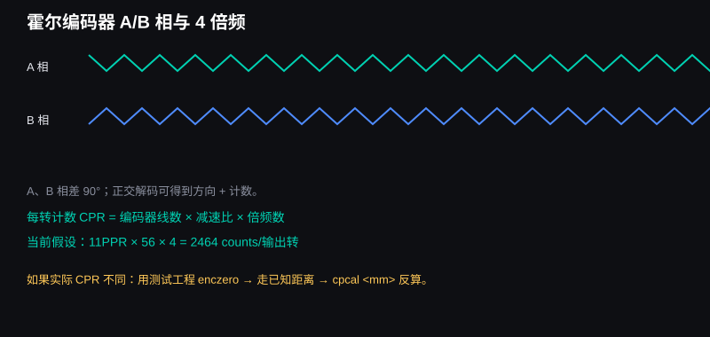
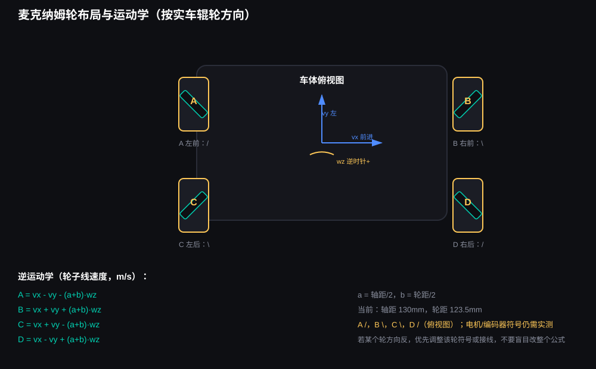
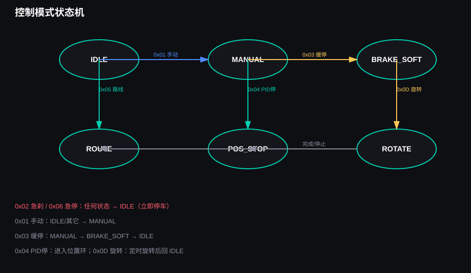
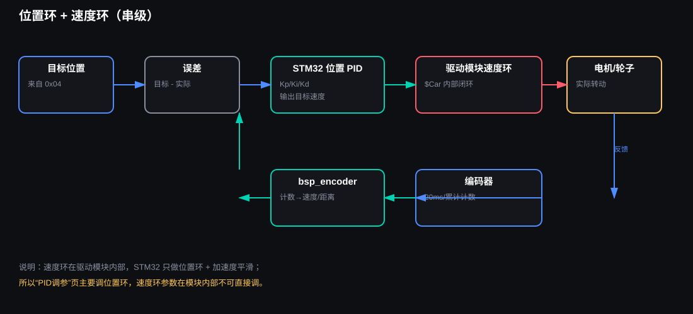

麦轮小车 — 零基础教学手册（阶段 3）
- 麦轮小车 — 零基础教学手册（阶段 3）
- 0. 先看结论：这套工程到底在做什么
- 1. 系统全景
- 2. 完整数据流：从电脑到四个轮子
- 3. 硬件原理：电机、编码器、PWM、H 桥、麦轮
- 4. 通信：UART、蓝牙和协议
- 5. 控制算法：从“会转”到“可控”
- 6. 软件结构与代码地图
- 7. 参数中心：每一个能改的值
- 8. 标定与实验流程
- 9. 故障排查树
- 10. 自测题：确认你真的理解了
- 11. 目前不确定、需要实车确认的地方
- 12. 最小改动清单（先不动源代码）
- 13. 专业术语表
- 14. 建议的下一步
- 15. 版本记录
2026-10-21 变更：普通手动、固定路线和旋转已取消缓起/缓停；PID 只在“控制与测试”页使用。车轮辊轮方向按
车轮布局.jpg：A/，B\，C\，D/（俯视图）。工程目录：
D:\CODEX-WORK\蓝牙遥控麦轮小车
适用对象：没有编程基础，但愿意按步骤接线、烧录、观察和记录现象的使用者。
本手册的目标不是让你背代码，而是让你逐步建立这张心智地图：
电池供电
↓
电脑/手机发指令
↓
HC-04 蓝牙把字节送到 STM32
↓
STM32 解析协议、解算麦轮速度、做平滑/位置控制
↓
驱动模块接收四轮目标速度，自己完成 PWM 和速度闭环
↓
电机转动
↓
编码器把实际转动送回驱动模块，再回到 STM32 和电脑
说明：本阶段只新增教学文档，不修改任何源代码，也不删除重复文件和临时脚本。
文档里的【算法】标记表示：这一段不是“接上线就能懂”的基础代码，而是需要理解原理、可以单独标定和调参的算法部分。
0. 先看结论：这套工程到底在做什么
0.1 一句话概括
这是一套“电脑/手机 → 蓝牙串口 → STM32 → 四路电机驱动模块 → 四个麦轮”的遥控小车工程；STM32 不直接产生电机 PWM，而是把车体速度换算成四个轮子的目标速度，通过串口发送给驱动模块，由驱动模块完成底层电机闭环。
0.2 四个轮子的名字
本工程统一使用下面的名字，后面所有文档、命令和曲线都按这个顺序：
| 编号 | 名字 | 位置 | 常见用途 |
|---|---|---|---|
| A | 左前轮 | 车头左侧 | wheel 0 对应 A |
| B | 右前轮 | 车头右侧 | wheel 1 对应 B |
| C | 左后轮 | 车尾左侧 | wheel 2 对应 C |
| D | 右后轮 | 车尾右侧 | wheel 3 对应 D |
0.3 车体坐标的正方向
代码使用的坐标约定：
vx > 0：向前
vy > 0：向左
wz > 0：逆时针旋转（从上往下看，车头向左转）
这三个量分别是：
vx：前后平移速度，单位m/s；vy：左右平移速度，单位m/s；wz：旋转角速度，单位rad/s。
注意：这是“数学约定”，不是“轮子实际一定这样转”。如果实车方向反了，先做单轮方向测试，再调整轮子符号或接线，不要直接猜。
0.4 本手册的阅读顺序
建议不要从第一页硬读到最后一页，而是按下面的顺序：
- 先看第 1 章和第 2 章：知道有哪些设备、数据怎么走；
- 再看第 3 章：理解电机、编码器、PWM、H 桥、麦轮；
- 接着看第 4 章：理解串口和协议；
- 然后看第 5 章：理解【算法】部分；
- 最后看第 6～9 章：按文件、参数、标定和故障排查动手；
- 每学完一块，回到第 10 章的“自测题”检查自己是否真的理解。
1. 系统全景
1.1 系统架构图

这张图把系统分成五层：
应用层：电脑上位机、手机蓝牙串口助手
通信层：HC-04 蓝牙、USART、二进制协议
控制层：模式状态机、麦轮运动学、平滑、位置 PID
设备层：驱动模块通信、电机输出、编码器读取
执行/传感层：四个电机、四个编码器、四个麦轮
分层的好处是：以后要加自动避障、视觉定位或自动驾驶，不需要把整个工程推倒重来，只需要在“应用层”或“控制层”增加模块。
1.2 硬件清单与各自职责
| 设备 | 作用 | 本工程中的关键点 |
|---|---|---|
| STM32F407VET6 | 主控，运行控制程序 | 3.3V 逻辑；USART1/2/3；SWD 下载 |
| 松甲四路编码器电机驱动模块（AT8236） | 接收四轮目标速度，驱动电机，读取编码器 | 模块自己产生 PWM、完成速度闭环 |
| JGB37-520 电机 ×4 | 执行转动 | 12V，减速比 56 |
| 80mm 麦轮 ×4 | 把轮子转动变成全向移动 | 按实车图：A /，B \，C \，D /（俯视图） |
| 3S 锂电池 | 系统能源 | 资料标称 12.4V，满电约 12.6V |
| 稳压模块 | 分出 12V/5V/3.3V | 多路输出；注意共地 |
| HC-04 | 经典蓝牙 SPP + BLE | 本阶段用经典蓝牙 SPP 透传 |
| ST-Link | 下载和调试 | SWDIO/PA13、SWCLK/PA14、GND |
| USB 转串口 | 有线调试 | COM5，115200，8N1 |
1.3 电源和共地：这是最容易被忽略的安全问题
电源关系可以画成：
3S 电池
├─ 稳压模块 12V → 驱动模块功率电源
├─ 稳压模块 5V → STM32 开发板
└─ 稳压模块 3.3V → HC-04 蓝牙
（也可以按实际模块，从 STM32 的 3V3 给 HC-04）
所有设备的 GND —— 必须连在一起 —— 共地
必须记住：
- GND 共地：STM32、驱动模块、HC-04、USB 转串口、稳压模块的 GND 要连在一起。没有共同参考地，串口字节会乱。
- 电压不能乱接：HC-04 的供电按模块要求使用 3.3V 或允许范围内电压；不要把 12V 直接接到 3.3V 逻辑设备。
- 驱动模块 UART 口的 5V 不要接到 STM32：只接 TX、RX、GND，避免倒灌。
- 第一次测试先架空轮子：让轮子离地，确认方向和计数，再放到地面。
- 开发板调试阶段优先用 ST-Link 供电：按你的要求，先只给开发板供电，确认程序正常，再接电机电源，降低烧板风险。
- 电池容量和放电倍率尚未最终确认：3S 电池能不能同时带动四个电机，要看容量、C 数和保护板；如果一加速就复位，优先怀疑电源跌落，而不是代码。
1.4 电源、逻辑电平和信号电平不是一回事
- 电源：给设备提供能量，例如 12V、5V、3.3V；
- 逻辑电平：芯片判断“0/1”的电压范围，STM32 是 3.3V 逻辑；
- 信号：UART 的 TX/RX 上传输的字节波形。
一个设备“有 5V 电源”不代表它的 UART 信号可以安全接 3.3V 芯片。本工程按资料确认 HC-04 逻辑电平为 3.3V，驱动模块串口也按 3.3V 逻辑处理；接线前仍要核对模块丝印和资料。
2. 完整数据流：从电脑到四个轮子
2.1 数据流总图

2.2 手动遥控的正向链路
以“电脑摇杆向前推”为例：
① 上位机摇杆产生 vx、vy、wz
PC_上位机/ui/main_window.py
MainWindow._manual_tick()
② 打包成二进制帧
PC_上位机/protocol.py
cmd_manual() → build_frame()
③ 通过串口/蓝牙发出
PC_上位机/serial_worker.py
SerialWorker.send_frame()
④ Windows 经典蓝牙 SPP
COM7（传出）或 COM8（传入）
↓ 无线蓝牙
⑤ HC-04 收到字节，从 TXD 送到 STM32 USART1_RX（PA10）
⑥ STM32 逐字节解析
STM32_Project/CubeMX/MecanumCar/User/bsp_bluetooth.c
Bluetooth_OnRxByte()
⑦ 校验通过后交给控制模式
control_mode.c
ControlMode_OnCommand()
指令 0x01 → 保存目标 vx/vy/wz，进入 MODE_MANUAL
⑧ 20ms 控制周期
control_mode.c
ControlMode_Poll()
→ 直接发送目标速度（普通控制不使用平滑）
→ ControlMode_RunSpeedLoop()
⑨ 麦轮逆运动学
chassis_control.c
Chassis_Inverse()
把车体速度变成 A/B/C/D 四个轮子的线速度
⑩ 归一化并限幅
control_mode.c
g_wheel_target[i] = 轮速 / CFG_MAX_WHEEL_SPEED_M_S
再限幅到 -1.0～+1.0
⑪ 发送给驱动模块
bsp_motor.c → Motor_SetSpeed()
driver_comm.c → DriverComm_SendCar()
串口文本：$Car:w1,w2,w3,w4!
⑫ 驱动模块内部
接收目标速度 → 读取编码器 → 速度闭环 → 输出 PWM → H 桥 → 电机
⑬ 四个轮子转动
关键点：STM32 发的是“目标速度”，不是直接发 PWM。 底层速度环在驱动模块内部，这是本工程当前的设计选择。
2.3 反馈链路：轮子实际转了多少
电机轴转动
↓
霍尔编码器产生 A/B 相脉冲
↓
驱动模块读取并累计编码器
↓
STM32 定时请求：
$MOTOR_4CH_READ:encoder_20ms!
$MOTOR_4CH_READ:encoder_total!
↓
driver_comm.c 解析文本回包
↓
bsp_encoder.c 把计数换算成速度/距离
↓
control_mode.c 组状态帧 0x81 和曲线帧 0x82
↓
bsp_bluetooth.c 从 USART1 发回 HC-04
↓
电脑串口接收、解析、显示曲线
2.4 每一步落在哪个文件、哪个函数
| 步骤 | 文件 | 函数/代码 | 发生什么 |
|---|---|---|---|
| 摇杆采样 | PC_上位机/ui/main_window.py |
_manual_tick() |
读取键盘/摇杆，形成 vx/vy/wz |
| 构造指令 | PC_上位机/protocol.py |
cmd_manual()、build_frame() |
小端打包，计算校验和 |
| 串口发送 | PC_上位机/serial_worker.py |
SerialWorker.send_frame() |
写入 COM 口 |
| 蓝牙透传 | HC-04 | 硬件透传 | 不解析内容，只转发字节 |
| 帧解析 | bsp_bluetooth.c |
Bluetooth_OnRxByte() |
找 AA 55，读长度、指令、数据、校验 |
| 指令分派 | control_mode.c |
ControlMode_OnCommand() |
根据 CMD 设置模式/参数 |
| 周期控制 | control_mode.c |
ControlMode_Poll() |
20ms 一次，处理模式、请求反馈、发遥测 |
| 运动学 | chassis_control.c |
Chassis_Inverse() |
车体速度 → 四轮线速度 |
| 电机输出 | bsp_motor.c |
Motor_SetSpeed() |
限幅后调用驱动通信 |
| 驱动通信 | driver_comm.c |
DriverComm_SendCar() |
拼 $Car:...! 文本 |
| 编码器换算 | bsp_encoder.c |
Encoder_GetWheelSpeeds() |
20ms 计数 → m/s |
| 遥测 | control_mode.c |
ControlMode_SendStatus()、ControlMode_SendCurve() |
组 0x81/0x82 |
| 上位机解析 | PC_上位机/protocol.py |
FrameParser.feed()、parse_status() |
还原模式、电压、编码器、速度 |
2.5 有线调试链路为什么也存在
除了蓝牙，工程还有一条 USB 转串口调试链路：
PC COM5（115200）
↔ USB 转串口
↔ STM32 USART3（PB10/PB11）
CFG_DEBUG_BRIDGE_ENABLE=1 时，STM32 会把发给蓝牙的协议帧同时从 USART3 发出，方便你在没有蓝牙或蓝牙不稳定时，用有线串口观察数据。
3. 硬件原理：电机、编码器、PWM、H 桥、麦轮
3.1 直流减速电机
JGB37-520 可以理解为：
电机本体高速转动
↓ 减速箱（56:1）
输出轴低速、较大扭矩
↓
轮子转动
减速比 56 的意思是：电机内部转子转约 56 圈，输出轴才转 1 圈。它的好处是扭矩更大、速度更适合小车；代价是输出轴速度变慢。
3.2 编码器是什么
编码器把“转了多少”变成电脉冲。本工程使用 AB 相增量式霍尔编码器：
- A 相：一路方波；
- B 相：另一路方波；
- A、B 有相位差，因此不仅能数脉冲，还能判断方向；
- 电机转得越快，单位时间脉冲越多。

PPR、CPR 和 4 倍频
- PPR（Pulses Per Revolution）：编码器每转的脉冲数。你的电机资料给的是 11 PPR。
- 减速比：56。
- 4 倍频：A、B 两相的上升沿和下降沿都可以计数，因此一个周期能数到 4 个边沿。
本工程当前使用的每输出轴转计数：
CPR = 11 PPR × 56 减速比 × 4 倍频
= 2464 counts/rev
CFG_ENCODER_CPR = 2464.0f 就是按这个公式得到的。
【算法】这里的“4 倍频”不是魔法，而是利用 A/B 两相的 4 个边沿提高分辨率。实际计数会受模块内部解码方式、线序、干扰和轮子打滑影响，所以最终应以实测标定为准。
编码器方向
如果正转时计数增加，反转时计数减少，说明方向定义一致；如果相反，可能是：
- A/B 相接反；
- 电机 M+/M- 接反；
- 代码中的符号需要取反；
- 机械安装方向与坐标定义相反。
3.3 PWM 和 H 桥
PWM
PWM（Pulse Width Modulation，脉宽调制）是快速开关电源的技术。可以把它想成“很快地开灯、关灯”：
- 开的时间比例叫占空比；
- 占空比越大，电机平均电压越高，转速通常越快；
- 频率要足够高，避免电机发出明显啸叫或抖动。
H 桥
H 桥由四个开关管组成，可以让电机：
- 正转；
- 反转；
- 制动；
- 停止。
AT8236 是单通道 H 桥驱动器，四路模块内部有四个通道，分别驱动四个电机。
本工程中 STM32 不直接生成 PWM。STM32 发送
$Car目标速度，驱动模块内部完成 PWM 和速度闭环。这样做的优点是接线和代码简单，缺点是底层速度环参数由模块决定，STM32 不能直接调它的每个 PWM 细节。
3.4 麦轮为什么能全向移动
普通轮子只能前进/后退；麦轮（Mecanum wheel）的轮毂周围有一圈斜向辊轮，四个轮子以特定方向组合转动时，可以产生：
- 前进/后退；
- 左右横移；
- 原地旋转；
- 斜向移动。
本工程按以下布局理解：

A 左前 B 右前
C 左后 D 右后
按 车轮布局.jpg 的俯视图：A 轮辊轮向右上（/），B 轮向右下（\），C 轮向右下（\），D 轮向右上（/）。电机方向、编码器方向和代码符号仍要分别验证。这为横移和旋转提供了机械基础。
仍然需要做“单轮方向测试”，因为“辊轮方向正确”不等于“电机正负方向、编码器方向、代码符号”三者已经一致。
4. 通信：UART、蓝牙和协议
4.1 UART 是什么
UART（Universal Asynchronous Receiver/Transmitter，通用异步收发器）是一种常见的串口通信方式。双方约定：
- 波特率：每秒传输多少位，例如 9600、115200；
- 数据位：通常 8 位；
- 校验位：通常无；
- 停止位：通常 1 位。
本工程写成的 8N1 就是：
8 个数据位 + No parity（无校验）+ 1 个停止位
常见错误是“线接对了，但波特率不一致”，现象通常是：完全没数据，或者收到乱码。
4.2 三个串口的分工
| STM32 串口 | 引脚 | 外设 | 当前波特率 | 用途 |
|---|---|---|---|---|
| USART1 | PA9/PA10 | HC-04 蓝牙 | 9600 | 电脑/手机 ↔ STM32 |
| USART2 | PA2/PA3 | 四路驱动模块 | 115200 | STM32 ↔ 驱动模块 |
| USART3 | PB10/PB11 | USB 转串口 | 115200 | 有线调试/镜像观察 |
注意：config.h 里虽然有 CFG_DRIVER_BAUD 和 CFG_DEBUG_BAUD，但当前 usart.c 中 USART2/USART3 仍然是硬编码 115200；只有 USART1 引用了 CFG_BLUETOOTH_BAUD。这是一个已知的代码一致性点，不要误以为改宏就一定会改变所有串口。
4.3 经典蓝牙 SPP 与 BLE 的区别
- 经典蓝牙 SPP（Serial Port Profile）：把蓝牙模拟成串口。Windows 配对后会出现“传入/传出”COM 口。本阶段使用它。
- BLE（Bluetooth Low Energy）：低功耗蓝牙，通信模型不是传统串口，需要 GATT 服务/特征值。HC-04 虽然支持双模，但本阶段不依赖 BLE。
- Windows 蓝牙设置中可能出现 COM7“传出”、COM8“传入”。不同软件的打开方式不同；如果连接成功但没有数据，首先核对上位机打开的是哪个口，以及驱动模块/固件是否真的在发数据。
4.4 二进制协议帧

本工程 PC ↔ STM32 的帧格式：
AA 55 LEN CMD DATA... CHECK
| 字段 | 长度 | 含义 |
|---|---|---|
AA 55 |
2 字节 | 帧头，告诉解析器“新帧开始” |
LEN |
1 字节 | CMD + DATA 的总字节数 |
CMD |
1 字节 | 指令码 |
DATA |
0～N 字节 | 参数，按小端存放 |
CHECK |
1 字节 | (LEN + CMD + 所有 DATA) & 0xFF |
为什么需要校验和
无线蓝牙可能受干扰，串口也可能丢字节。校验和不能纠正错误，但能发现“这一帧可能坏了”，避免把坏数据当成速度指令执行。
一个具体例子
发送“前进 1.0 m/s，vy=0，wz=0”：
vx = 1.000 m/s → ×1000 = 1000 = 0x03E8
小端存放：E8 03
vy = 0 → 00 00
wz = 0 → 00 00
CMD = 01
DATA = E8 03 00 00 00 00
LEN = 1 + 6 = 07
CHECK = (07 + 01 + E8 + 03 + 00 + 00 + 00 + 00) & FF = F3
完整帧：
AA 55 07 01 E8 03 00 00 00 00 F3
常见指令表
| CMD | 名称 | 数据 | 说明 |
|---|---|---|---|
0x01 |
手动速度 | 3 个 int16：vx、vy、wz，单位 0.001 | 进入手动模式 |
0x02 |
急刹停 | 无 | 直接发零速度，模式回空闲 |
0x04 |
位置 PID 停 | int16 目标距离 mm | 位置环走到目标附近 |
0x05 |
固定路线 | route_id + 边长单位 | 当前固件 route.c 仍是占位实现 |
0x06 |
急停 | 无 | 立即清目标并停车 |
0x08 |
设置位置 PID | Kp、Ki、Kd ×1000 | 在线改参数 |
0x09 |
编码器清零 | 无 | 记录当前计数为零点 |
0x0A |
心跳 | 无 | 返回 ACK |
0x0B |
读参数 | 无 | 返回 0x85 参数帧 |
0x0C |
设置限幅 | 最大线速度/角速度 ×1000 | 运行期限幅 |
0x0D |
原地旋转 | int16 角度，单位 0.1° | 正数左转，负数右转 |
回报帧：
| CMD | 名称 | 内容 |
|---|---|---|
0x81 |
状态 | 模式、电压、四轮累计计数、四轮实际速度 |
0x82 |
曲线 | 四轮目标速度、四轮实际速度 |
0x83 |
ACK | 心跳/指令确认 |
0x85 |
参数 | 当前 PID、限幅等 |
4.5 驱动模块文本协议
STM32 与四路驱动模块之间不是二进制帧，而是可读文本：
$Car:0.300,0.300,0.300,0.300!
$MOTOR_4CH_READ:encoder_20ms!
$MOTOR_4CH_READ:encoder_total!
$MOTOR_4CH_READ:battery!
$MOTOR_PARAM:8,11,56!
要点：
- 每个命令以
$开头、以!结尾； $Car的四个数范围通常是-1.0～+1.0；DriverComm_OnRxByte()按!切分一条响应；- 模块回包用
sscanf解析成DriverComm_Data_t结构体； - 如果模块手册中的命令字、字段顺序或单位不同，必须以手册为准，不能只看代码猜。
4.6 帧解析状态机

接收端不能假设“一次串口中断就收到完整一帧”。可能一次只来一个字节，也可能一帧被拆成很多次中断。因此代码用状态机：
等待 AA → 等待 55 → 等待 LEN → 等待 CMD → 等待 DATA → 校验 → 交给控制层
这叫逐字节状态机。它的好处是：不需要知道数据什么时候到齐，来一个字节就推进一步。
5. 控制算法：从“会转”到“可控”
本章所有标题带
【算法】的内容，都是可以通过测试工程和上位机调试中心单独观察、单独调参的部分。
5.1 控制周期与实时性
CFG_LOOP_MS = 20 表示控制主循环每 20ms 执行一次，也就是约 50Hz：
每 20ms：
请求一次编码器 20ms 计数
每 5 个周期请求一次累计计数（约 100ms）
每 50 个周期请求一次电池电压（约 1s）
根据当前模式计算一次输出
每 100ms 上报一次状态/曲线
为什么需要固定周期？
- PID 的积分和微分依赖时间；
- 速度平滑按“每个周期的增量”计算；
- 遥测曲线需要稳定的时间轴；
- 主循环不能被长时间阻塞，否则控制会抖动。
5.2 开环与闭环
- 开环：只发目标，不检查实际结果。例如只发
$Car:0.3,...而不看编码器。 - 闭环：测量实际值，和目标比较，再修正输出。
本工程有两层闭环概念：
外层：STM32 位置环（只用于 PID 精准停）
内层：驱动模块速度环（$Car 的目标速度 → 编码器 → PWM）
这也是为什么 0x07（速度环 PID）在当前固件中是预留：速度环在模块内部，STM32 不直接调它。
5.3 【算法】麦轮逆运动学
逆运动学的任务：
已知车体想怎么动（vx、vy、wz），求四个轮子各应该转多快。
代码中的公式：
A = vx - vy - (a + b) × wz
B = vx + vy + (a + b) × wz
C = vx + vy - (a + b) × wz
D = vx - vy + (a + b) × wz
其中：
a = 轴距 / 2（米）
b = 轮距 / 2（米）
本工程参数：
轴距 = 130 mm → a = 0.065 m
轮距 = 123.5 mm → b = 0.06175 m
a + b = 0.12675 m
为什么会有加减号？
- 前进时四个轮子同向；
- 横移时左右两侧的轮子需要不同组合；
- 旋转时左侧和右侧轮子方向相反；
a+b体现轮子离车体中心的几何距离，距离越大，同样的角速度需要更大的轮速。
这里的公式建立在特定的轮子编号、辊轮方向和坐标定义上。如果实车的 B/D 轮方向与代码假设相反，前进可能变成斜行，旋转可能方向错误。不要把公式当成“绝对真理”，要用单轮测试和整车测试验证。
5.4 【算法】归一化与最小驱动
驱动模块的 $Car 接受 -1.0～+1.0 的归一化速度。STM32 的轮速是 m/s，所以需要：
归一化轮速 = 轮子线速度 / CFG_MAX_WHEEL_SPEED_M_S
例如：
CFG_MAX_WHEEL_SPEED_M_S = 1.0 m/s
轮子目标 = 0.3 m/s
→ $Car 目标 = 0.3
然后代码会做最小驱动处理：
如果最大轮速的绝对值 < CFG_MIN_DRIVE：
所有轮速按同一比例放大，使最大轮速达到 CFG_MIN_DRIVE
当前：
CFG_MIN_DRIVE = 0.30
原因是低占空比时电机可能克服不了静摩擦，出现“嗡嗡响但不转”或“转一下停一下”。但放大最小驱动也有副作用：
- 起步更猛；
- 低速微调变粗；
- 如果地面摩擦变化，可能仍然抖动。
注意：这是“整体放大”，不是把每个轮子都强行设成 0.3；它保持四个轮子的比例关系，避免破坏运动方向。
5.5 缓起缓停已删除
2026-10-21 版本已删除普通手动、固定路线和旋转中的缓起/缓停及速度斜坡。
当前普通控制直接执行目标速度；需要平滑效果时，应在控制与测试页通过 PID 参数和机械标定获得稳定响应。
5.6 停止方式
| 方式 | 代码行为 | 现象 | 适用场景 |
|---|---|---|---|
| 急刹停 | Motor_Stop() 发零速度，模式回 IDLE |
立即停，可能有惯性冲击 | 紧急情况、测试 |
| PID 位置停 | 位置环 + 编码器距离反馈 | 走到指定距离后停 | 控制与测试页 |
注意：本工程所说的“急刹”是让驱动模块目标速度归零，不是机械抱闸；轮子仍会因惯性滑行一小段。
5.7 【算法】原地旋转与时间标定
当前旋转不是角度闭环，而是时间控制：
旋转时间 = |目标角度| / 90° × CFG_ROTATE_MS_PER_90
当前：
CFG_ROTATE_MS_PER_90 = 900 ms
CFG_ROTATE_DRIVE = 0.60
例如发送 45°，代码会让轮子以固定速度转约 450ms。问题是：
- 电池电压变化会改变实际转速；
- 地面摩擦、轮子打滑会改变角度；
- 负载变化会改变减速；
- 所以 900ms 只是一个可调起点，必须实测标定。
标定流程：
- 在轮子悬空或低摩擦场地先确认方向；
- 发送
rot90 0.6 900； - 用手机水平仪/量角器/地面标记测量实际角度；
- 若实际转了 80°，建议时间 = 900 × 90 / 80 ≈ 1013ms；
- 把建议值写回
CFG_ROTATE_MS_PER_90； - 重新编译、烧录、复测 45° 和 90°。
5.8 【算法】PID 位置环
PID 是什么
PID 是 Proportional-Integral-Derivative 的缩写：
输出 = Kp × 误差
+ Ki × 误差积分
+ Kd × 误差变化率
- P（比例）：误差越大，修正越猛；
- I（积分）：长期存在的小误差会被累积，用来消除静差；
- D（微分）：误差变化太快时给出阻尼，抑制超调。

本工程的位置环
目标不是“轮子速度”，而是“车体前进到某个位置”：
目标距离 = 起点距离 + 目标相对距离
当前距离 = 四轮编码器距离的平均值
误差 = 目标距离 - 当前距离
PID 输出 = 期望车体速度 vx
然后这个 vx 再经过麦轮逆运动学和 $Car 发给驱动模块。
当前 PID 代码的三个细节
- 积分项累加
error × dt； - 积分做了限幅，防止积分饱和；
- 微分项当前是
Kd × (error - prev_error)，没有除以 dt。
这意味着：
Ki、Kd的数值与 20ms 控制周期绑定；- 换控制周期后，同样的参数效果会变化；
- 调参时不要盲目照搬别人的 Kp/Ki/Kd。
PID 调参顺序（位置环）
- 先令
Ki=0, Kd=0； - 从小到大增加
Kp，直到能走到目标但略有超调； - 如果总是差一点到不了，少量增加
Ki； - 如果超调/来回摆，少量增加
Kd或降低Kp； - 每次只改一个参数，记录现象；
- 用上位机“PID 调参”页和“PID 阶跃仿真”配合观察。
5.9 固定路线
当前固定路线由上位机执行，基本序列是：
前进 → 停顿 → 左转90° → 停顿
↑ ↓
└──── 重复 4 次（正方形）──┘
要点：
- 路线是时间控制，不是每段都用编码器闭环；
- 速度、边长、停顿时间都会影响实际轨迹；
- 电池电压下降会让同样时间的行走距离变短；
- 如果界面显示“到第三条边”但车还没走完，说明界面定时器/状态推进与实车运动不同步，需要检查路线状态机和定时器；
- 固件
route.c目前是空实现，0x05不是当前 PC 路线的主路径。
6. 软件结构与代码地图
6.1 目录总览
蓝牙遥控麦轮小车/
├─ STM32_Project/ STM32 主工程
│ ├─ CubeMX/MecanumCar/
│ │ ├─ Core/ CubeMX 生成的 HAL 初始化
│ │ ├─ Drivers/ ST 官方 HAL/CMSIS
│ │ ├─ MDK-ARM/ Keil 工程和编译输出
│ │ └─ User/ 你写的用户代码
│ └─ User/ 源码副本（需与上面同步）
├─ Test_Project/ 独立测试/标定工程
│ └─ MecanumTest/
│ ├─ Test/ 测试命令和算法
│ └─ MDK-ARM/ Keil 测试工程
├─ PC_上位机/ PySide6 上位机
│ ├─ ui/ 界面
│ ├─ protocol.py 协议
│ ├─ serial_worker.py 串口线程
│ └─ config.py 上位机参数
├─ diagrams/ SVG 示意图和生成脚本
├─ 01_接线图.md 接线说明
├─ 02_引脚分配表.md 引脚说明
├─ 03_通信协议_v0.1.md 协议说明
├─ 参数手册.md 参数/标定手册
├─ 代码地图.md 文件级地图
├─ Keil使用导航.md Keil 操作教程
└─ 工程只读分析报告.md 只读分析、风险、最小改动清单
6.2 主固件用户层文件
| 文件 | 层 | 一句话作用 | 删掉会怎样 | 关键技术 |
|---|---|---|---|---|
config.h |
配置层 | 所有可调参数的集中入口 | 所有模块找不到参数 | C 宏 |
user_app.c/h |
应用入口 | 初始化模块、启动接收中断、主循环 | 没有初始化和主循环 | HAL UART 中断、回调 |
bsp_bluetooth.c/h |
协议层 | PC ↔ STM32 的二进制帧收发 | 蓝牙无法控制/回传 | 状态机、校验和、UART |
control_mode.c/h |
控制决策层 | 模式、平滑、位置 PID、旋转、遥测 | 没有控制逻辑 | 状态机、PID、斜坡 |
chassis_control.c/h |
运动学层 | 麦轮正/逆运动学 | 车体速度无法变成四轮速度 | 几何/线性关系 |
bsp_motor.c/h |
执行器层 | 四轮速度限幅并下发 | 电机不会收到目标 | 限幅、文本协议 |
bsp_encoder.c/h |
传感器层 | 计数→速度/距离、零点 | 没有反馈 | 单位换算、软件零点 |
driver_comm.c/h |
驱动通信层 | $Car、编码器、电压的文本协议 |
STM32 与驱动模块断开 | UART、sscanf |
pid.c/h |
算法层 | 位置式 PID | 精准停无法闭环 | PID、积分限幅 |
route.c/h |
路线层 | 固件路线接口（当前空实现） | 0x05 无实际动作；PC 路线仍可用 |
状态机占位 |
6.3 CubeMX 生成层文件
| 文件 | 作用 | 必要性 | 技术 |
|---|---|---|---|
Core/Src/main.c |
程序入口、时钟、初始化调用 | 程序没有入口 | HAL、RCC/PLL |
Core/Src/usart.c |
USART1/2/3 初始化和引脚复用 | 串口不能用 | HAL UART、GPIO AF |
Core/Src/stm32f4xx_it.c |
中断入口 | 中断不触发 | NVIC、HAL IRQ |
Core/Src/gpio.c |
GPIO 初始化 | 基础 GPIO 缺失 | HAL GPIO |
Core/Src/system_stm32f4xx.c |
CMSIS 系统初始化 | 系统启动异常 | CMSIS |
Core/Inc/*.h |
声明和配置 | 编译失败 | C 头文件 |
Drivers/ |
ST HAL/CMSIS 库 | HAL 函数找不到 | 官方库 |
CubeMX 生成的文件是“基础工程”，不是本项目的算法核心。你可以先理解
main.c的调用顺序，不需要一上来逐行读 HAL 库。
6.4 上位机文件
| 文件 | 层 | 作用 | 关键技术 |
|---|---|---|---|
main.py |
启动 | 创建 Qt 应用、窗口 | PySide6 |
config.py |
配置 | 串口、尺寸、协议码、颜色、默认参数 | Python 常量 |
protocol.py |
协议 | 组帧、解析、指令构造、回报解析 | struct、状态机 |
serial_worker.py |
通信 | 后台串口读写，避免卡 UI | QThread、pyserial |
demo_worker.py |
演示 | 无硬件时模拟数据 | 定时器/模拟协议 |
ui/main_window.py |
UI | 手动、路线、PID、曲线、调试中心、日志 | PySide6、pyqtgraph |
6.5 核心函数讲解
main.c 的 main()
HAL_Init()
→ 初始化 HAL
SystemClock_Config()
→ 配置 168MHz 时钟
MX_GPIO_Init()
MX_USART1_UART_Init()
MX_USART2_UART_Init()
MX_USART3_UART_Init()
User_Init()
→ 初始化驱动通信、协议、运动学、控制模式、接收中断、电机、编码器
while (1)
→ User_Loop()
→ ControlMode_Poll()
user_app.c 的 HAL_UART_RxCpltCallback()
这是 HAL 的“收到一个字节后回调”：
USART1 收到字节 → Bluetooth_OnRxByte()
USART2 收到字节 → DriverComm_OnRxByte()
USART3 收到字节 → Bluetooth_OnRxByte()
每个分支处理完后都要重新调用 HAL_UART_Receive_IT()，否则只会收到第一个字节。这是初学者最常见的串口问题之一。
control_mode.c 的 ControlMode_Poll()
这是整个控制系统的“心跳”：
时间到 20ms？
→ 请求编码器
→ 根据模式执行：
IDLE：停车
MANUAL：直接速度 + 逆运动学 + $Car
BRAKE_SOFT：逐步减速
POS_STOP：位置 PID
ROTATE_ANGLE：定时旋转
ROUTE：路线状态机
→ 每 100ms 发状态/曲线
chassis_control.c 的 Chassis_Inverse()
输入车体速度，输出四轮速度；这是麦轮“全向移动”的数学核心。必须配合正确的轮子编号、辊轮方向和符号。
bsp_encoder.c 的 Encoder_GetWheelSpeeds()
20ms 计数
→ 除以 CPR 得到圈数
→ 乘轮周长得到距离
→ 除以 0.02s 得到 m/s
driver_comm.c 的 DriverComm_OnRxByte()
按 ! 切分完整文本包，再用 sscanf 解析。它不主动理解“车体速度”，只负责把模块回包变成结构体字段。
bsp_bluetooth.c 的 Bluetooth_OnRxByte()
逐字节找帧头、读长度、读数据、校验，最后调用 ControlMode_OnCommand()。它不知道什么是“麦轮”，只负责把完整指令交给控制层。
6.6 代码注释怎么读
本工程的核心用户代码采用了“每行或每个关键语句配中文注释”的风格，例如：
float a = CFG_WHEELBASE_MM / 2000.0f; /* 半轴距：前后轴距/2，换算成米 */
读注释时不要只看“这行做了什么”，还要问三个问题：
- 输入是什么？ 单位是什么？
- 输出是什么？ 送给谁？
- 如果这行错了，实车会有什么现象？
例如 CFG_WHEELBASE_MM 如果误写成 1300，a+b 会变大，旋转和横移时轮速差会明显不对，但直线前进可能看起来仍然正常。这就是“参数错误不一定会让车完全不转”的原因。
当前 CubeMX 自动生成的 HAL 文件保留了 ST 原始注释，不是每一行都有中文注释。后续如需严格满足“所有文件每行中文注释”，应在阶段 5 做一次专门的注释整理，而不是现在混在算法修改里。
7. 参数中心：每一个能改的值
7.1 三类参数
| 类型 | 在哪里 | 改完要做什么 | 例子 |
|---|---|---|---|
| 编译期参数 | config.h |
重新编译 + 烧录 | CPR、轮径、轴距、最小驱动 |
| 运行期参数 | 上位机 PID/调试中心 | 点下发，掉电可能丢失 | 位置 PID、限幅 |
| 只读诊断 | 状态栏、曲线、日志 | 不改 | 电压、编码器计数、当前模式 |
7.2 config.h 参数总表
| 参数 | 当前值 | 单位 | 影响 | 改动后的现象 |
|---|---|---|---|---|
CFG_BLUETOOTH_BAUD |
9600 | bps | USART1 与 HC-04 波特率 | 不对则无数据/乱码 |
CFG_DRIVER_BAUD |
115200 | bps | USART2 与驱动模块的波特率 | 必须与驱动模块实际波特率一致 |
CFG_DEBUG_BAUD |
115200 | bps | USART3 有线调试波特率 | 必须与 USB 转串口一致 |
CFG_WHEEL_DIAMETER_MM |
80.0 | mm | 轮速、距离、$MOTOR_PARAM |
偏大/偏小导致距离和速度比例错 |
CFG_WHEELBASE_MM |
130.0 | mm | 麦轮逆运动学 | 旋转/横移轮速差不对 |
CFG_TRACK_MM |
123.5 | mm | 麦轮逆运动学 | 旋转/横移轮速差不对 |
CFG_ENCODER_CPR |
2464.0 | counts/rev | 计数→圈数→速度/距离 | 速度、距离、PID 全比例错 |
CFG_MAX_SPEED_M_S |
1.0 | m/s | 手动 vx/vy 限幅 | 太大失控，太小很肉 |
CFG_MAX_OMEGA_RAD_S |
1.0 | rad/s | 手动 wz 限幅 | 旋转过快/打滑 |
CFG_MAX_WHEEL_SPEED_M_S |
1.0 | m/s | 轮速归一化 | 归一化比例错，实际速度偏大/偏小 |
CFG_MIN_DRIVE |
0.30 | 归一化 | 低速最小驱动 | 太小震动，太大起步猛 |
CFG_ROTATE_DRIVE |
0.60 | 归一化 | 原地旋转轮速 | 太小不转/震动，太大过冲 |
CFG_ROTATE_MS_PER_90 |
900 | ms | 时间控制旋转角度 | 角度偏大/偏小 |
CFG_ROTATE_TOL_DEG |
2.0 | ° | 注释上的到位容差 | 当前未实际使用 |
CFG_YAW_SIGN |
1.0 | — | 注释上的偏航方向 | 当前未实际使用 |
CFG_DEBUG_BRIDGE_ENABLE |
1 | — | 是否从 USART3 镜像协议帧 | 0=关闭有线镜像 |
CFG_LOOP_MS |
20 | ms | 控制周期 | 改小更快但更吃 CPU/串口 |
CFG_TELEMETRY_MS |
100 | ms | 状态/曲线上报周期 | 改小曲线更密，串口压力更大 |
CFG_POS_KP |
0.8 | — | 位置环比例 | 大→更快但可能超调 |
CFG_POS_KI |
0.0 | — | 位置环积分 | 大→消静差但可能振荡 |
CFG_POS_KD |
0.0 | — | 位置环微分 | 大→阻尼但可能放大噪声 |
CFG_ROUTE_SIDE_MM |
800 | mm | 注释上的路线边长 | 当前 PC 路线不一定使用 |
7.3 control_mode.c 里的运行期变量
这些变量不是宏，而是程序运行时保存的状态：
| 变量 | 作用 | 说明 |
|---|---|---|
g_mode |
当前模式 | IDLE/MANUAL/POS_STOP/ROUTE/ROTATE_ANGLE |
g_target_vx/vy/wz |
目标车体速度 | 来自 0x01 指令 |
g_wheel_target[4] |
四轮归一化目标 | 发给 $Car |
g_wheel_actual[4] |
四轮实际线速度 | 由编码器换算，用于上报 |
g_pos_pid |
位置环 PID 状态 | Kp/Ki/Kd、积分、上次误差 |
g_pos_start |
PID 停起点 | 收到 0x04 时的平均距离 |
g_pos_target |
目标相对距离 | 0x04 的目标 |
g_rotate_end_tick |
旋转结束时间 | HAL tick |
g_rotate_dir |
旋转方向 | +1 左转，-1 右转 |
g_max_speed/omega |
运行期限幅 | 可被 0x0C 修改 |
7.4 上位机 config.py 的关键值
| 参数 | 当前值 | 说明 |
|---|---|---|
SERIAL_BAUDRATE |
9600 | 默认蓝牙 SPP |
PORT_BAUDRATE |
COM5=115200 | 有线调试 |
DEFAULT_PORT |
COM7 | 当前蓝牙传出端口 |
TX_INTERVAL_MS |
50 | 手动控制发送周期 |
MAX_VX/MAX_VY |
1.0 | 摇杆满量程对应 1.0 m/s |
MAX_WZ |
1.5 | 旋转角速度上限 |
MIN_DRIVE |
0.30 | 与固件对应的显示/标定值 |
DEFAULT_ROUTE_SIDE_MM |
800 | 路线默认边长 |
CURVE_MAX_POINTS |
400 | 曲线缓存点数 |
7.5 改参数的顺序
- 先改
config.h的机械参数（轮径、轴距、轮距、CPR）； - 重新编译主工程；
- 烧录；
- 用测试工程/调试中心做单轮、编码器、旋转标定；
- 再改控制参数（最小驱动、PID）；
- 每次只改一个参数，记录“改前/改后现象”；
- 不要同时改代码、参数和接线，否则无法判断是谁造成的。
8. 标定与实验流程
8.1 上电前的安全清单
- [ ] 电池未接、开关关闭；
- [ ] 所有 GND 共地；
- [ ] 驱动模块 UART 的 5V 未接；
- [ ] HC-04 供电电压正确；
- [ ] 电机插头插紧；
- [ ] 轮子架空；
- [ ] ST-Link/串口线不会碰到电机电源；
- [ ] 知道急停按钮/空格键在哪里。
8.2 实验 1：链路自检
- 开发板只由 ST-Link 供电；
- 打开上位机，选择 COM7，9600；
- 点“连接”；
- 观察是否有 RX 字节、状态帧、心跳 ACK；
- 若没有，先不要接电机电源。
判断标准：
- 有 RX 字节：至少物理链路有数据；
- 有 0x81 状态帧：STM32 在正常发遥测；
- 心跳有 0x83 ACK：协议和固件都在工作；
- 只有 TX 没有 RX：优先查蓝牙端口/波特率/接线。
8.3 实验 2：单轮方向和编码器
用测试工程或调试中心：
wheel 0 0.3 → A 轮
wheel 1 0.3 → B 轮
wheel 2 0.3 → C 轮
wheel 3 0.3 → D 轮
每次只转一个轮子，记录：
- 轮子是否转；
- 转向是否符合“前进正方向”；
- 编码器计数是增加还是减少；
- 是否有震动、停顿、异响。
如果某个轮子反向，先确认是机械安装方向还是代码符号；不要同时改所有轮子。
8.4 实验 3：编码器 CPR 标定
- 架空或低速；
- 发
enczero清零； - 让车走一段已知距离（例如直线 1000mm）；
- 记录四轮累计计数；
- 用测试命令
cpcal 1000或上位机调试中心计算； - 把建议 CPR 写回
CFG_ENCODER_CPR； - 重新烧录并复测。
理论公式：
CPR = 计数 × 轮周长 / 实际距离
如果计算出的 CPR 与 2464 差很多，优先检查：
- 实际轮径；
- 减速比；
- 编码器线数；
- 4 倍频假设；
- 轮子打滑；
- 编码器线序/丢脉冲。
8.5 实验 4：最小驱动
从很小速度开始：
min 0.10
min 0.15
min 0.20
min 0.25
min 0.30
记录“开始连续转、不明显震动”的最小值。当前 CFG_MIN_DRIVE=0.30 是经验起点，不是永久真理。
8.6 实验 5：旋转标定
- 先确认左转/右转方向；
- 发
rot90 0.6 900； - 量实际角度；
- 用
rotcal 实测角度得到建议时间； - 修改
CFG_ROTATE_MS_PER_90； - 复测 45°、90°、连续旋转。
8.7 实验 6：PID 位置停
- 先用
pidstep在电脑上做仿真，理解 Kp/Ki/Kd 的影响； - 再在车上用低速度、短距离测试；
- 先 P，后 I，最后 D；
- 记录超调、到达时间、稳态误差；
- 位置环输出的是速度，最终仍由驱动模块速度环执行。
8.8 实验 7：固定路线
- 先把边长设小（如 400～600mm）；
- 速度设低（如 0.3～0.4）；
- 停顿设 500ms；
- 观察是否按“走一边→停→转→停”的顺序；
- 记录实际轨迹和界面进度是否一致；
- 如果界面跳步，先检查路线定时器和
route_gen，不要先改 PID。
9. 故障排查树
9.1 蓝牙连接成功但没有数据
按顺序查：
1. 上位机打开的是 COM7 还是 COM8？
2. 波特率是否 9600？
3. HC-04 的 TXD/RXD 是否交叉接到 STM32？
4. 是否共地？
5. KEY 是否悬空/没有进入 AT 模式？
6. STM32 是否真的在运行、是否烧了正确固件？
7. USART1 初始化是否 9600？
8. 用 COM5 有线调试是否能看到 0x81/0x82？
如果有线能看到数据、蓝牙看不到，问题更可能在蓝牙链路；如果两边都没有，问题更可能在固件/串口初始化。
9.2 电机不转
1. 驱动模块 12V 是否有电？
2. 电机插头是否插紧？
3. `$Car` 是否真的发出？
4. 速度是否低于最小驱动？
5. 驱动模块是否收到正确的电机类型/参数？
6. 是否处于 IDLE 或被急停覆盖？
7. 单轮 `wheel` 能否转？
9.3 轮子震动、转一下停一下
优先怀疑：
- 速度太低，低于静摩擦/驱动阈值；
CFG_MIN_DRIVE太小；- 电源电流不足或电压跌落；
- 编码器丢脉冲，速度环误判；
- 轮子机械卡滞；
- 驱动模块参数/电机类型不匹配。
9.4 编码器为 0 或方向相反
- 检查 A/B 相线；
- 检查编码器供电和 GND；
- 检查插头接触；
- 单轮手动转，观察计数；
- 若计数反向，确认是编码器 A/B 反接还是电机方向反接；
- 不要把“编码器反向”和“电机反向”混为一谈。
9.5 前进斜行、横移方向不对、旋转方向不对
优先检查：
- 四个轮子的实际位置是否与 A/B/C/D 对应；
- 左右辊轮是否镜像；
- 单轮正方向是否一致；
CFG_WHEELBASE_MM、CFG_TRACK_MM是否量对；Chassis_Inverse()的符号是否与实车布局匹配；- 是否有某个轮子的 M+/M- 接反。
9.6 路线刚开始就跳到第三条边
优先检查：
- 上位机路线定时器是否重复启动；
route_gen是否让旧定时器失效；- 路线步骤是否在“发送指令”时立刻推进，而不是等动作完成；
- 是否有多个窗口/多个定时器同时运行；
- 蓝牙延迟是否让状态反馈滞后。
9.7 PID 抖动或超调
- Kp 太大：响应快但容易超调/振荡；
- Ki 太大：消静差但容易积分饱和；
- Kd 太大：对编码器噪声敏感；
- 控制周期不稳定：PID 的 dt 不准；
- 机械间隙/打滑：编码器看到“到了”，车体未必真的到了。
9.8 Keil 编译/烧录问题
参见 Keil使用导航.md。最常见的三类：
- 编译器版本不对（AC5/AC6）；
- 头文件路径没加；
- ST-Link/Flash 算法没配置好。
10. 自测题：确认你真的理解了
10.1 基础题
vx、vy、wz的正方向分别是什么？- A/B/C/D 四个轮子分别在哪里？
- 为什么所有设备必须共地？
- UART 的 9600 和 115200 分别用在哪条链路？
$Car里的四个数字范围是什么？
10.2 协议题
- 一帧的六个部分是什么？
LEN包含 CMD 吗？- 校验和怎么计算？
- 为什么接收要用状态机，而不是假设一次收完？
- 0x81 和 0x82 分别是什么？
10.3 【算法】题
- 麦轮逆运动学中
a+b代表什么？ - 为什么旋转时左右轮方向相反？
CFG_MIN_DRIVE为什么会影响低速抖动？- 普通直接速度控制和 PID 的区别是什么？
- PID 的 P、I、D 分别解决什么问题？
- 为什么当前旋转是“时间控制”，不是“角度闭环”？
- 如果实际转 80° 而目标是 90°，旋转时间应该变长还是变短？
10.4 排错题
- 蓝牙连接成功但 RX 一直是 0，你先查什么？
- 单轮能转、四轮前进斜行，你先查什么？
- 编码器计数为 0，但电机能转，你先查什么？
- 路线界面跳步，但车还没走完，你先查什么？
- PID 停来回摆，你先改哪个参数？
11. 目前不确定、需要实车确认的地方
这一节不是“猜”，而是明确列出当前代码依赖但尚未最终验证的假设。后续每次实测后，应把结果补到这里。
| 编号 | 待确认项 | 当前假设 | 怎么确认 |
|---|---|---|---|
| U1 | 四个轮子位置 | A 左前、B 右前、C 左后、D 右后 | 对照实车和模块座号 |
| U2 | 辊轮方向 | A /，B \，C \，D /（按车轮布局.jpg） |
对照图片、单轮测试和整车横移/旋转测试 |
| U3 | 电机正方向 | $Car 正值按模块手册使车前进 |
单轮 wheel + 四轮低速 |
| U4 | 编码器方向 | 正转计数增加 | 手动正转/反转观察 |
| U5 | 编码器倍频 | 4 倍频，CPR=2464 | 走已知距离，cpcal 实测 |
| U6 | 轮径 | 80mm | 卡尺量含胎面直径 |
| U7 | 轴距/轮距 | 130mm / 123.5mm | 量轮子中心距 |
| U8 | 驱动模块协议 | $Car 及回包格式如代码 |
对照模块手册 |
| U9 | 蓝牙端口 | COM7 传出、COM8 传入 | 设备管理器 + 实际收发测试 |
| U10 | 蓝牙模式 | 经典 SPP 透明传输，KEY 悬空 | 检查模块状态和 AT 设置 |
| U11 | 电池能力 | 能支撑四电机峰值电流 | 看电池容量/C 数/保护板，实测电压跌落 |
| U12 | 旋转方向 | 正角度=左转 | 发 45°/90° 观察 |
| U13 | 最大轮速 | 1.0 m/s | 单轮逐步加速，记录稳定上限 |
| U14 | 路线同步 | PC 定时器与实际运动一致 | 低速短路线实测 |
| U15 | 速度环位置 | 驱动模块内部完成 | 对照模块手册和 $Car 行为 |
在这些项目确认前，不建议把“参数手册里的默认值”当成最终标定值。默认值只是让你能开始测试的起点。
12. 最小改动清单（先不动源代码）
详细版本见
工程只读分析报告.md第 5 章。这里给出教学版摘要。
P0：先让蓝牙链路稳定
- 确认 COM7/COM8 哪个方向可用；
- 确认 USART1=9600；
- 确认 HC-04 TX/RX 交叉、共地；
- 用 COM5 有线链路对照；
- 确认固件确实在发 0x81/0x82。
P1：编码器标定
- 单轮方向；
- 走已知距离；
cpcal计算 CPR；- 更新
CFG_ENCODER_CPR； - 复测速度/距离。
P2：旋转标定
- 确认左/右转；
- 量 90° 实际角度；
rotcal计算时间；- 更新
CFG_ROTATE_MS_PER_90。
P3：路线同步
- 确认 PC 路线定时器不会重复推进；
- 低速、短边、长停顿测试；
- 暂不依赖固件
route.c。
P4：低速与安全
- 调
CFG_MIN_DRIVE； - 观察低速是否震动、起步是否过猛；
- 确认松开按键立即停止；
- 确认急停/通信超时后能够安全停车。
P5：工程清理（暂不执行）
- 同步
STM32_Project\User与STM32_Project\CubeMX\MecanumCar\User； - 处理重复
User\User目录； - 处理
_*.py临时脚本； - 统一测试工程与主工程的
config.h。
13. 专业术语表
| 术语 | 中文 | 解释 |
|---|---|---|
| PWM | 脉宽调制 | 用快速开关控制平均电压，从而控制电机速度 |
| H 桥 | H-Bridge | 四个开关组成的电机正反转驱动电路 |
| UART | 通用异步收发器 | 常见串口通信方式 |
| bps | 比特每秒 | 波特率的单位 |
| SPP | 串口端口协议 | 经典蓝牙模拟串口 |
| BLE | 低功耗蓝牙 | 另一种蓝牙通信模型 |
| PPR | 每转脉冲数 | 编码器每转输出脉冲数 |
| CPR | 每转计数 | 经过倍频/减速比后的每输出轴转计数 |
| 4 倍频 | Quadrature ×4 | 利用 A/B 相四个边沿提高计数分辨率 |
| 正运动学 | Forward Kinematics | 四轮速度 → 车体速度 |
| 逆运动学 | Inverse Kinematics | 车体速度 → 四轮速度 |
| PID | 比例-积分-微分 | 一种反馈控制算法 |
| 闭环 | Closed Loop | 测量实际值并修正 |
| 开环 | Open Loop | 只发指令，不检查结果 |
| 死区 | Deadband | 输入很小但执行器没有反应的区域 |
| 积分饱和 | Integral Windup | 积分累积过大导致超调 |
| 斜坡 | Ramp | 让目标值逐步变化，避免突变 |
| 状态机 | State Machine | 用有限状态描述流程和切换条件 |
| 校验和 | Checksum | 用简单求和检查数据是否可能出错 |
| 小端 | Little Endian | 低位字节放在前面的存储方式 |
14. 建议的下一步
本阶段的目标是“看懂并会动手”，不是一次性把所有参数调到完美。建议按下面顺序进行：
- 先打开
diagrams/system_architecture.svg和diagrams/data_flow.svg，对照本手册第 1～2 章； - 打开
Keil使用导航.md，确认会编译、烧录、进入调试； - 按第 8 章做链路、单轮、编码器、最小驱动、旋转、PID、路线实验；
- 每做完一个实验，把实测值写进
参数手册.md的记录表； - 确认教学内容和实车现象一致后，再进入阶段 4：手机适配的离线可视化网站。
阶段 4 网站会把这本手册变成可点击、可交互的页面：架构图、代码地图、参数中心、标定向导、麦轮运动学、PID 模拟器、协议实验室和故障排查。算法模块会统一带
【算法】标记。
15. 版本记录
| 日期 | 内容 |
|---|---|
| 2026-10-19 | 阶段 3 教学手册初版：系统架构、数据流、硬件原理、协议、算法、代码地图、参数、标定、排错、术语和自测题 |